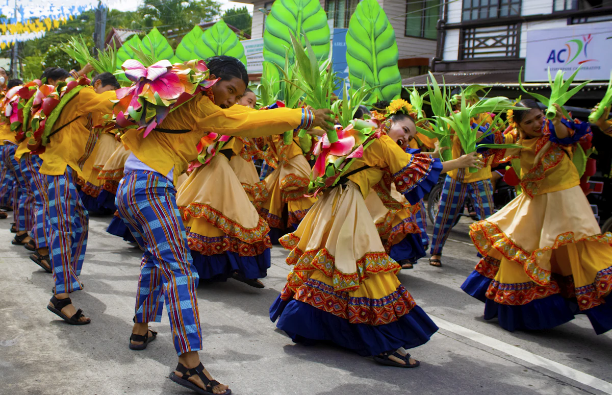
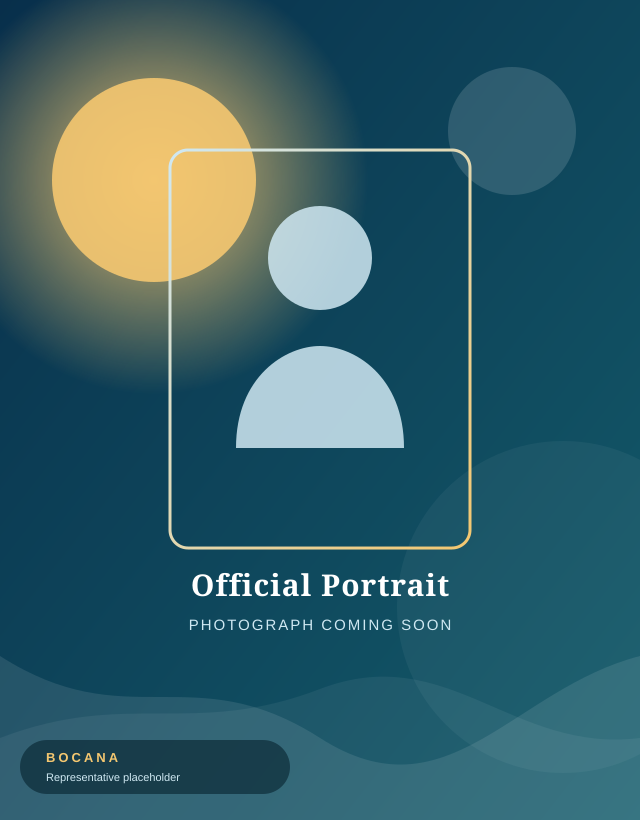

Barangay · Ilog · Negros Occidental · Philippines
BARANGAY
BOCANA
Where culture, community, and celebration meet on the shores of Ilog.

Kisi-Kisi
Festival
Welcome to Bocana
A coastal community with a warm heart and a colorful spirit
Barangay Bocana is a community in Ilog, Negros Occidental — part of the Western Visayas region of the Philippines. It is known for its local culture, strong community spirit, and the Kisi-Kisi Festival, a celebration of the barangay's identity and its people.
From quiet coastal life to festive gatherings of music, food, and color, Bocana invites you to experience a slice of authentic Visayan community living.
- Coastal atmosphere
- Strong community ties
- Music & celebration
- Local pride
Bocana at a Glance
A proud part of the Ilog community
Location
Ilog, Negros Occidental
Region
Western Visayas
Country
Philippines
Festival
Kisi-Kisi Festival
0
Festival highlights
0
Community focus areas
0
Gallery collections
0
Ways to explore
Kisi-Kisi Festival
Celebrating the culture and spirit of Bocana
The Kisi-Kisi Festival is the barangay's own celebration — a time when the community comes together to honor its identity through performances, food, decorations, and shared joy.
Official festival history, origin, and detailed meaning are still being gathered. This paragraph is an editable placeholder for the verified Kisi-Kisi Festival story.
- Performances & street celebration
- Local food & community gatherings
- Participation across the barangay
- Music, dance & decorations

KISI-KISI
A celebration of home
Explore Bocana
Places, spaces, and moments worth discovering
 Coastal
Coastal
Coastal Areas
The shoreline and riverbank where daily coastal life unfolds.
Discover More Nature
Nature
Nature & Greenery
Fields, mangroves, and the lush provincial landscape of Ilog.
Discover More Community
Community
Community Spaces
Places where neighbors gather, celebrate, and build the barangay.
Discover MoreLife in Bocana
A community that lives together, celebrates together
Barangay Leadership
Leadership rooted in community service
Barangay Bocana is served by its barangay officials and is part of the Municipality of Ilog. The municipal leadership is currently headed by Mayor Arnel Jun Apio.
Notes on the mayor's music: Mayor Arnel Jun Apio is also known for his involvement in music and singing — "Sawi sa Pag-ibig."
Meet the Leadership
Upcoming Events
Mark your calendar
No upcoming events have been published yet.
When the barangay announces official events and festival schedules, they will appear here.
Past & community events
Kisi-Kisi Festival celebrations
Festival events, community gatherings, and past highlights will be listed here as verified information is published.
Share an event updateFind Bocana
A barangay of the Municipality of Ilog
Find us in Ilog, Negros Occidental, in the Western Visayas region of the Philippines.
Exact barangay coordinates are still being verified. An official Google Maps embed will be placed here once confirmed. [Insert official Google Maps location here]
Barangay Bocana
Ilog, Negros Occidental, Philippines
[ Insert official Google Maps location ]
Come visit, celebrate, and be part of the Bocana story
Whether you're a visitor, a researcher, or a neighbor — there's always a warm welcome in Barangay Bocana.